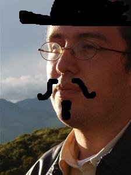

about me
 Software:
Software:
Torta
Karmack
Plata
FUmanchu!
Rants:
AboutMe
Blogging
El origen del hombre americano
Propositos2006
Propositos2007
SWFing
Pictures:
Sicilia -
thumbs
Visita Dimo 2007 -
thumbs
Tokyo -
thumbs
Barcelona -
thumbs
Lisbon -
thumbs
Gilberto Gil -
thumbs
Visita Fidel -
thumbs
Hiver -
thumbs
Dogs -
thumbs
Italy -
thumbs
Eurockeennes -
thumbs
Grenoble -
thumbs
Chipie -
thumbs
Place aux Herbes -
thumbs
Eek Friends:
 Alejo Alejo
Javier
Nelson
Old Posts:
Archive
Created with:
emacs
bash
libXSLT


 Dimo's Art
Quebec Hispano
Dimo's Art
Quebec Hispano
|
|
2006 - April |
|
El tema obligado de la semana son los datos sobre los cultivos de coca en la región andina. Aquí esta el informe. Aquí un análisis. Dado que objetivo del plan Colombia era reducir las hectareas cultivadas (en un 50%), la única conclusión posible al saber que los cultivos no solo no han disminuido, sino que han aumentado, es que el Plan Colombia ha sido un fracaso.
No era Londoño el que decía que ya casi no quedaba ni una mata de coca en Colombia?
Payaso.
|
|
|

|
|
Javier me invita a escribir un Tanka. Ver en el mismo post de javo la explicacion.
Aqui va:
El lavaseco
charco morado
nubes que no se mueven
calle vacia
la ropa que da vueltas
tres vagos, cinco perros
Invito a todo el que quiera a escribir uno.
|
|
charco morado
nubes que no se mueven
calle vacia
la ropa que da vueltas
tres vagos, cinco perros
|
|
 Cuando comencé a usar GNU/Linux y FreeBSD (ya no recuerdo cuando) lo hice motivado por la superioridad, avallasadora en ese entonces, de los sistemas libres para el desarrollo de aplicaciones en internet. Alejo fue abriendo el camino, instalando GNU/Linux e invitando a algunos de nosotros a hacerlo. Desde el fondo de esa nueva selva tecnologica llegaban tambien los ecos de la comunidad que la cultivaba: la comunidad del software libre.
En el corazon de todo esto estaba el mensaje simple pero poderoso de Richard Stallman: hay algo esencialmente incorrecto en un modelo de crear y distribuir software que impide a los programadores compartir su conocimiento, su trabajo, sus ideas con sus amigos programadores y con el resto de la humanidad. Un mensaje casi subversivo en un mundo donde las reglas han sido montadas para que el compartir software no solo no sea alentado, sino convertido en un acto ilegal.
En esa epoca en la que descubriamos el software libre, vimos nacer el movimiento "Open Source". Un grupo de personas que tenian el objetivo explicito de cambiar el mensaje que animaba la comunidad: las nuevas ideas a retener no eran aquellas de libertad y cooperacion. La nueva idea era que la motivacion para compartir software es la superioridad tecnica de sus resultados. Explicaban ellos que era importante esconder en el armario el discursos sobre la libertad y la cooperacion, porque semejantes ideas tan siniestras corrian el riesgo de espantar
a los jefes de la industria.
Cuando comencé a usar GNU/Linux y FreeBSD (ya no recuerdo cuando) lo hice motivado por la superioridad, avallasadora en ese entonces, de los sistemas libres para el desarrollo de aplicaciones en internet. Alejo fue abriendo el camino, instalando GNU/Linux e invitando a algunos de nosotros a hacerlo. Desde el fondo de esa nueva selva tecnologica llegaban tambien los ecos de la comunidad que la cultivaba: la comunidad del software libre.
En el corazon de todo esto estaba el mensaje simple pero poderoso de Richard Stallman: hay algo esencialmente incorrecto en un modelo de crear y distribuir software que impide a los programadores compartir su conocimiento, su trabajo, sus ideas con sus amigos programadores y con el resto de la humanidad. Un mensaje casi subversivo en un mundo donde las reglas han sido montadas para que el compartir software no solo no sea alentado, sino convertido en un acto ilegal.
En esa epoca en la que descubriamos el software libre, vimos nacer el movimiento "Open Source". Un grupo de personas que tenian el objetivo explicito de cambiar el mensaje que animaba la comunidad: las nuevas ideas a retener no eran aquellas de libertad y cooperacion. La nueva idea era que la motivacion para compartir software es la superioridad tecnica de sus resultados. Explicaban ellos que era importante esconder en el armario el discursos sobre la libertad y la cooperacion, porque semejantes ideas tan siniestras corrian el riesgo de espantar
a los jefes de la industria.
 Olvidaban (tal vez a proposito) que si Richard Stallman se hubiese dejado llevar por el miedo a espantar a "los jefes de la industria", ni GNU ni Linux habrian existido.
Para cuando el Software Libre, en la forma de GNU/Linux, llego a ser suficientemente popular como para llamar la atencion de los medios, el campo Open Source ya habia ganado la guerra del marketing, desafortunadamente. La diferencia es sutil, pero clave: el movimiento open source quiere reducir la discusion a un plano unicamente tecnico. El movimiento del Software Libre, en cambio, no esta dispuesto a abandonar su critica de que solo unos cuantos sean quienes deciden que, como y quienes pueden usar y distribuir software. Cabe preguntarse que parte de la victoria del termino "Open Source" le corresponde a la participacion de Sun, IBM, HP y otros fabricantes, con muchos mas recursos para propagar sus mensajes que los partidarios del software libre.
Como los exitos del software libre son innegables, algunos quisieran hacernos creer que su existencia se debe solo a que los grandes fabricantes de software clementemente han dejado que algunos sistemas sean desarrollados cooperativamente. Este post es pues para invitar a todos los lectores, especialmente a los programadores, que se peguen una pasada por este sitio y lean la filosofia detras del movimiento del software libre, y no olviden los principios fundamentales.
Olvidaban (tal vez a proposito) que si Richard Stallman se hubiese dejado llevar por el miedo a espantar a "los jefes de la industria", ni GNU ni Linux habrian existido.
Para cuando el Software Libre, en la forma de GNU/Linux, llego a ser suficientemente popular como para llamar la atencion de los medios, el campo Open Source ya habia ganado la guerra del marketing, desafortunadamente. La diferencia es sutil, pero clave: el movimiento open source quiere reducir la discusion a un plano unicamente tecnico. El movimiento del Software Libre, en cambio, no esta dispuesto a abandonar su critica de que solo unos cuantos sean quienes deciden que, como y quienes pueden usar y distribuir software. Cabe preguntarse que parte de la victoria del termino "Open Source" le corresponde a la participacion de Sun, IBM, HP y otros fabricantes, con muchos mas recursos para propagar sus mensajes que los partidarios del software libre.
Como los exitos del software libre son innegables, algunos quisieran hacernos creer que su existencia se debe solo a que los grandes fabricantes de software clementemente han dejado que algunos sistemas sean desarrollados cooperativamente. Este post es pues para invitar a todos los lectores, especialmente a los programadores, que se peguen una pasada por este sitio y lean la filosofia detras del movimiento del software libre, y no olviden los principios fundamentales.
|
|
|
Este reportaje y este otro, sobre las declaraciones de una de las fichas del paramilitarismo en el DAS, le hacen poner a uno los pelos de punta. Pensar que el director del DAS involucrado en todos esos escandalos es hoy consul de Colombia en Milan le hacen dar ganas a uno de llorar.
En un tema completamente diferente, este sitio es muy instructivo. Y este tambien.
|
|
|

 Save this post]
Save this post]